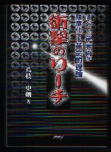

な、な、なんとっ！、優勝を決めたあの衝撃のリーチは、実はノー聴だった！

なんてことがあるわきゃない(笑)。
洋書を買う都合があって、今日、丸善へ出かけた。せっかくなので実用書のコーナーへも顔を出した。そこで見つけた競馬の本。タイトルに惹かれて、アレッ！と手に取った。すぐ競馬の本だと分かったが、このホームページのネタ１本の為に1800円も投資してしまった。（笑）
といっても、本当にネタだけのために買ったわけではない。σ(-_-)は中身が麻雀に関係なくても、タイトルなどに「雀」とか、「リーチ」とか「テンパイ」という言葉があれば、なんでも買うのだ。そういう本の集まりだけでも、勘違い本という立派な１ジャンル。
これまでにも「大雀命（おおささぎのみこと）」という日本神話の本や、「マージャン、カラオケ、ゴルフはお止めなさい」という経営学の本まで買っている（中はチラッと見ただけで、全然読んでない）。
「衝撃のリーチ」のキャッチコピーには、「あまりの的中率と高収益ゆえ、決して出版が許されなかった競馬界最大の切り札“衝撃のリーチ理論”」とある。なんだかすごい理論のようだが、σ(-_-)は競馬をやらないのでサッパリわからない。。。。
興味がある人、買ってみたら？。(^-^)
|